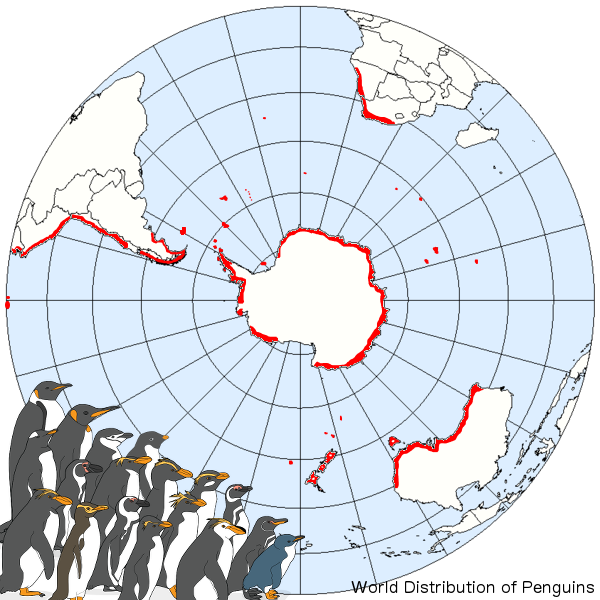

Where in the world can we find penguins?
Contrary to popular belief, only five penguin species ever set foot on the icy Antarctic continent and only two, the Adélie and emperor, live there exclusively. In fact, penguins inhabit a very diverse array of environments. The Humboldt penguin of Chile and Peru lives on the shores of the Atacama Desert, the driest desert in the world where temperatures can reach around 70°F (21°C). The yellow-eyed penguins of Enderby Island off New Zealand burrow under the trees of the dwarf rata forests. Each penguin species is uniquely adapted to its home environment.
